AIWatch — UI 界面模拟
手表UI规范尺寸体系（watchOS/Wear OS/HarmonyOS 调研） · 410×502 · 触控≥96px · 正文30px · 8pt×2 网格
10:27
4月26日 周六
78%
时间
天气
AI对话
番茄时钟
计步
MP3
设置
总览预览
4月26日 周六
10:27
北京
18°C
多云 22° / 12°
时间
北京
10:27
18
°C
多云
22° / 12°
11时
20°
14时
21°
17时
19°
20时
16°
天气
AI对话
10:27
你好！有什么我可以帮你的吗？
历史对话
帮我写一份项目计划书
04-26 09:15
明天天气怎么样？
04-25 20:32
推荐一些适合阅读的书
04-24 16:20
AI对话
番茄时钟
10:27
25:00
专注时间
番茄时钟
计步
10:27

6820
步
320
卡路里
4.8
公里
计步
计步
10:27
7000
步
342
卡路里
5.0
公里
计步 · 目标达成
MP3
10:27
Yesterday
The Beatles
01:24 / 02:03
MP3播放
设置
10:27
蓝牙
已连接
亮度
自动
声音
70%
语言
简体中文
关于本机
系统设置